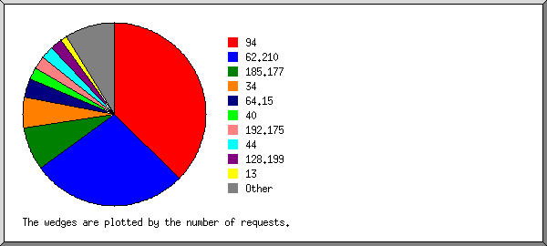
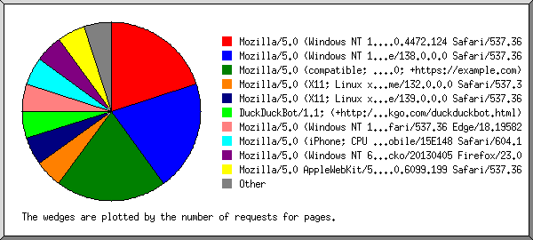
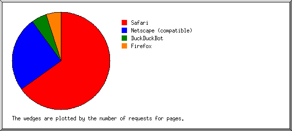
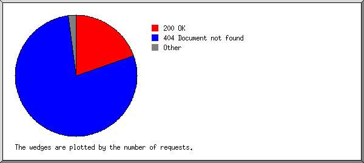
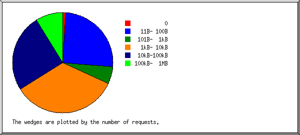
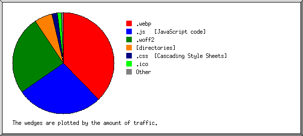
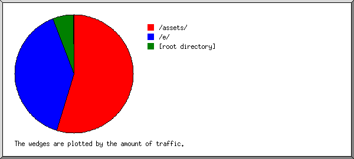
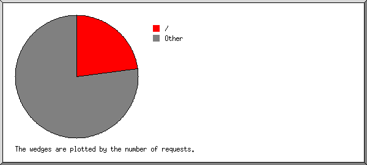

Web Server Statistics for app.doona.cloud
Web Server Statistics for app.doona.cloud
Program started on Thu, Aug 14 2025 at 9:47 AM.
Analyzed requests from Tue, Aug 12 2025 at 9:20 AM to Thu, Aug 14 2025 at 9:05 AM (1.99 days).
Web Server Statistics for app.doona.cloudProgram started on Thu, Aug 14 2025 at 9:47 AM.
Analyzed requests from Tue, Aug 12 2025 at 9:20 AM to Thu, Aug 14 2025 at 9:05 AM (1.99 days).
(Go To: Top | General Summary | Monthly Report | Daily Summary | Hourly Summary | Domain Report | Organization Report | Failed Referrer Report | Referring Site Report | Browser Report | Browser Summary | Operating System Report | Status Code Report | File Size Report | File Type Report | Directory Report | Request Report)
Successful requests: 91
Average successful requests per day: 45
Successful requests for pages: 21
Average successful requests for pages per day: 10
Failed requests: 370
Redirected requests: 1
Distinct files requested: 61
Distinct hosts served: 28
Data transferred: 3.30 megabytes
Average data transferred per day: 1.66 megabytes
(Go To: Top | General Summary | Monthly Report | Daily Summary | Hourly Summary | Domain Report | Organization Report | Failed Referrer Report | Referring Site Report | Browser Report | Browser Summary | Operating System Report | Status Code Report | File Size Report | File Type Report | Directory Report | Request Report)
Each unit ( ) represents 1 request for a page.
) represents 1 request for a page.
| month | #reqs | #pages | |
|---|---|---|---|
| Aug 2025 | 91 | 21 |   |
Busiest month: Aug 2025 (21 requests for pages).
(Go To: Top | General Summary | Monthly Report | Daily Summary | Hourly Summary | Domain Report | Organization Report | Failed Referrer Report | Referring Site Report | Browser Report | Browser Summary | Operating System Report | Status Code Report | File Size Report | File Type Report | Directory Report | Request Report)
Each unit () represents 1 request for a page.
| day | #reqs | #pages | |
|---|---|---|---|
| Sun | 0 | 0 | |
| Mon | 0 | 0 | |
| Tue | 38 | 10 |   |
| Wed | 42 | 7 | |
| Thu | 11 | 4 | |
| Fri | 0 | 0 | |
| Sat | 0 | 0 |
(Go To: Top | General Summary | Monthly Report | Daily Summary | Hourly Summary | Domain Report | Organization Report | Failed Referrer Report | Referring Site Report | Browser Report | Browser Summary | Operating System Report | Status Code Report | File Size Report | File Type Report | Directory Report | Request Report)
Each unit () represents 1 request for a page.
| hour | #reqs | #pages | |
|---|---|---|---|
| 0 | 29 | 2 | |
| 1 | 0 | 0 | |
| 2 | 6 | 3 | |
| 3 | 2 | 0 | |
| 4 | 0 | 0 | |
| 5 | 0 | 0 | |
| 6 | 3 | 1 | |
| 7 | 0 | 0 | |
| 8 | 0 | 0 | |
| 9 | 11 | 3 | |
| 10 | 7 | 6 | |
| 11 | 1 | 0 | |
| 12 | 20 | 1 | |
| 13 | 0 | 0 | |
| 14 | 0 | 0 | |
| 15 | 4 | 1 | |
| 16 | 0 | 0 | |
| 17 | 0 | 0 | |
| 18 | 2 | 0 | |
| 19 | 0 | 0 | |
| 20 | 3 | 3 | |
| 21 | 2 | 0 | |
| 22 | 0 | 0 | |
| 23 | 1 | 1 | |
(Go To: Top | General Summary | Monthly Report | Daily Summary | Hourly Summary | Domain Report | Organization Report | Failed Referrer Report | Referring Site Report | Browser Report | Browser Summary | Operating System Report | Status Code Report | File Size Report | File Type Report | Directory Report | Request Report)
Listing domains, sorted by the amount of traffic.
| #reqs | %bytes | domain |
|---|---|---|
| 91 | 100% | [unresolved numerical addresses] |
(Go To: Top | General Summary | Monthly Report | Daily Summary | Hourly Summary | Domain Report | Organization Report | Failed Referrer Report | Referring Site Report | Browser Report | Browser Summary | Operating System Report | Status Code Report | File Size Report | File Type Report | Directory Report | Request Report)

Listing organizations, sorted by the number of requests.
| #reqs | %bytes | organization |
|---|---|---|
| 34 | 47.63% | 94 |
| 25 | 39.01% | 62.210 |
| 7 | 7.67% | 185.177 |
| 5 | 0.73% | 34 |
| 3 | 1.81% | 64.15 |
| 2 | 0.36% | 40 |
| 2 | 1.37% | 192.175 |
| 2 | 0.34% | 44 |
| 2 | 0.36% | 128.199 |
| 1 | 13 | |
| 1 | 23 | |
| 1 | 0.18% | 35 |
| 1 | 178.128 | |
| 1 | 0.18% | 185.247 |
| 1 | 47 | |
| 1 | 0.18% | 87 |
| 1 | 3 | |
| 1 | 0.17% | 161.97 |
(Go To: Top | General Summary | Monthly Report | Daily Summary | Hourly Summary | Domain Report | Organization Report | Failed Referrer Report | Referring Site Report | Browser Report | Browser Summary | Operating System Report | Status Code Report | File Size Report | File Type Report | Directory Report | Request Report)
Listing referring URLs, sorted by the number of failed requests.
| #reqs | URL |
|---|---|
| 1 | http://app.doona.cloud/webhooks/runway/01989d74-ea37-7361-966f-ce8f51848948 |
(Go To: Top | General Summary | Monthly Report | Daily Summary | Hourly Summary | Domain Report | Organization Report | Failed Referrer Report | Referring Site Report | Browser Report | Browser Summary | Operating System Report | Status Code Report | File Size Report | File Type Report | Directory Report | Request Report)
Listing referring sites, sorted by the number of requests.
| #reqs | site |
|---|---|
| 40 | http://app.doona.cloud/ |
(Go To: Top | General Summary | Monthly Report | Daily Summary | Hourly Summary | Domain Report | Organization Report | Failed Referrer Report | Referring Site Report | Browser Report | Browser Summary | Operating System Report | Status Code Report | File Size Report | File Type Report | Directory Report | Request Report)

Listing browsers with at least 1 request for a page, sorted by the number of requests for pages.
| #reqs | #pages | browser |
|---|---|---|
| 7 | 4 | Mozilla/5.0 (Windows NT 10.0; Win64; x64) AppleWebKit/537.36 (KHTML, like Gecko) Chrome/91.0.4472.124 Safari/537.36 |
| 5 | 4 | Mozilla/5.0 (Windows NT 10.0; Win64; x64) AppleWebKit/537.36 (KHTML, like Gecko) Chrome/138.0.0.0 Safari/537.36 |
| 4 | 4 | Mozilla/5.0 (compatible; CMS-Checker/1.0; +https://example.com) |
| 25 | 1 | Mozilla/5.0 (X11; Linux x86_64) AppleWebKit/537.36 (KHTML, like Gecko) Chrome/132.0.0.0 Safari/537.3 |
| 2 | 1 | Mozilla/5.0 (X11; Linux x86_64) AppleWebKit/537.36 (KHTML, like Gecko) Chrome/139.0.0.0 Safari/537.36 |
| 2 | 1 | DuckDuckBot/1.1; (+http://duckduckgo.com/duckduckbot.html) |
| 1 | 1 | Mozilla/5.0 (Windows NT 10.0; Win64; x64) AppleWebKit/537.36 (KHTML, like Gecko) Chrome/70.0.3538.102 Safari/537.36 Edge/18.19582 |
| 1 | 1 | Mozilla/5.0 (iPhone; CPU iPhone OS 14_4 like Mac OS X) AppleWebKit/605.1.15 (KHTML, like Gecko) Version/15.4 Mobile/15E148 Safari/604.1 |
| 1 | 1 | Mozilla/5.0 (Windows NT 6.2; rv:22.0) Gecko/20130405 Firefox/23.0 |
| 1 | 1 | Mozilla/5.0 AppleWebKit/537.36 (KHTML, like Gecko; compatible; Googlebot/2.1; +http://www.google.com/bot.html) Chrome/120.0.6099.199 Safari/537.36 |
| 2 | 1 | Mozilla/5.0 (compatible; InternetMeasurement/1.0; +https://internet-measurement.com/) |
| 39 | 0 | [not listed: 4 browsers] |
(Go To: Top | General Summary | Monthly Report | Daily Summary | Hourly Summary | Domain Report | Organization Report | Failed Referrer Report | Referring Site Report | Browser Report | Browser Summary | Operating System Report | Status Code Report | File Size Report | File Type Report | Directory Report | Request Report)

Listing browsers with at least 1 request for a page, sorted by the number of requests for pages.
| # | #reqs | #pages | browser |
|---|---|---|---|
| 1 | 55 | 13 | Safari |
| 54 | 12 | Safari/537 | |
| 1 | 1 | Safari/604 | |
| 2 | 11 | 5 | Netscape (compatible) |
| 3 | 2 | 1 | DuckDuckBot |
| 2 | 1 | DuckDuckBot/1 | |
| 4 | 1 | 1 | Firefox |
| 1 | 1 | Firefox/23 | |
| 21 | 0 | [not listed: 2 browsers] |
(Go To: Top | General Summary | Monthly Report | Daily Summary | Hourly Summary | Domain Report | Organization Report | Failed Referrer Report | Referring Site Report | Browser Report | Browser Summary | Operating System Report | Status Code Report | File Size Report | File Type Report | Directory Report | Request Report)

Listing operating systems, sorted by the number of requests for pages.
| # | #reqs | #pages | OS |
|---|---|---|---|
| 1 | 14 | 10 | Windows |
| 13 | 9 | Windows NT | |
| 1 | 1 | Unknown Windows | |
| 2 | 35 | 7 | OS unknown |
| 3 | 27 | 2 | Unix |
| 27 | 2 | Linux | |
| 4 | 14 | 1 | Macintosh |
(Go To: Top | General Summary | Monthly Report | Daily Summary | Hourly Summary | Domain Report | Organization Report | Failed Referrer Report | Referring Site Report | Browser Report | Browser Summary | Operating System Report | Status Code Report | File Size Report | File Type Report | Directory Report | Request Report)

Listing status codes, sorted numerically.
| #reqs | status code |
|---|---|
| 91 | 200 OK |
| 1 | 302 Document found elsewhere |
| 1 | 400 Bad request |
| 4 | 403 Access forbidden |
| 362 | 404 Document not found |
| 3 | 500 Internal server error |
(Go To: Top | General Summary | Monthly Report | Daily Summary | Hourly Summary | Domain Report | Organization Report | Failed Referrer Report | Referring Site Report | Browser Report | Browser Summary | Operating System Report | Status Code Report | File Size Report | File Type Report | Directory Report | Request Report)

| size | #reqs | %bytes |
|---|---|---|
| 0 | 1 | |
| 1B- 10B | 0 | |
| 11B- 100B | 23 | 0.05% |
| 101B- 1kB | 5 | 0.05% |
| 1kB- 10kB | 31 | 5.02% |
| 10kB-100kB | 23 | 29.41% |
| 100kB- 1MB | 8 | 65.47% |
(Go To: Top | General Summary | Monthly Report | Daily Summary | Hourly Summary | Domain Report | Organization Report | Failed Referrer Report | Referring Site Report | Browser Report | Browser Summary | Operating System Report | Status Code Report | File Size Report | File Type Report | Directory Report | Request Report)

Listing extensions with at least 0.1% of the traffic, sorted by the amount of traffic.
| #reqs | %bytes | extension |
|---|---|---|
| 19 | 37.77% | .webp |
| 11 | 27.45% | .js [JavaScript code] |
| 1 | 25.49% | .woff2 |
| 21 | 5.64% | [directories] |
| 3 | 1.88% | .css [Cascading Style Sheets] |
| 5 | 1.14% | .ico |
| 4 | 0.43% | .svg |
| 27 | 0.19% | [no extension] |
(Go To: Top | General Summary | Monthly Report | Daily Summary | Hourly Summary | Domain Report | Organization Report | Failed Referrer Report | Referring Site Report | Browser Report | Browser Summary | Operating System Report | Status Code Report | File Size Report | File Type Report | Directory Report | Request Report)

Listing directories with at least 0.01% of the traffic, sorted by the amount of traffic.
| #reqs | %bytes | directory |
|---|---|---|
| 17 | 54.59% | /assets/ |
| 26 | 39.57% | /e/ |
| 22 | 5.77% | [root directory] |
| 23 | 0.05% | /.well-known/ |
| 3 | 0.02% | /admin/ |
(Go To: Top | General Summary | Monthly Report | Daily Summary | Hourly Summary | Domain Report | Organization Report | Failed Referrer Report | Referring Site Report | Browser Report | Browser Summary | Operating System Report | Status Code Report | File Size Report | File Type Report | Directory Report | Request Report)

Listing files with at least 20 requests, sorted by the number of requests.
| #reqs | %bytes | last time | file |
|---|---|---|---|
| 21 | 5.64% | Aug/14/25 6:46 AM | / |
| 70 | 94.36% | Aug/14/25 9:05 AM | [not listed: 56 files] |